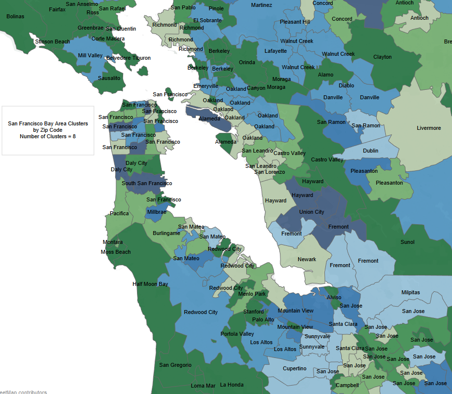
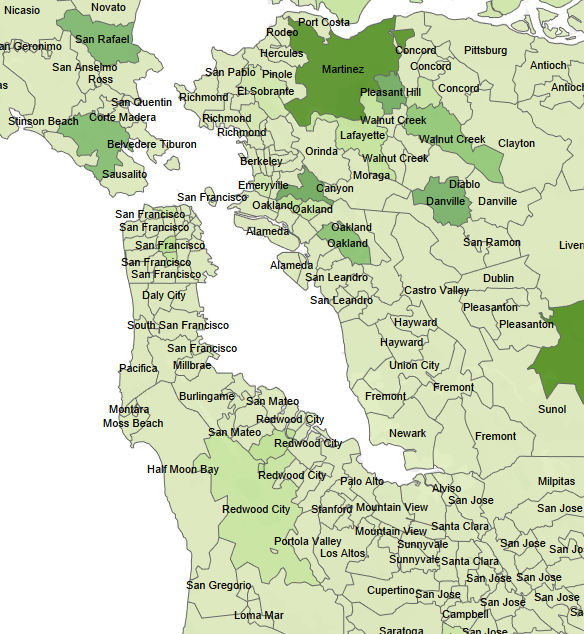

Neighborhood Scores is the capstone project created by
Judd | Sharon | Thiyagu
for the UC Berkeley Master of Information and Data Science program.
Check out the source code on Github!
Similarity Score
Have you ever had to relocate? Finding a new place to call home can be a daunting challenge, especially if you are unfamiliar with the new location. Often the best resources are friends and family in the area that know you well, and can help guide you to an area that suits your preferences. However, you may not always have these resources. Input from people is also subject to missing information and bias. Eventually, you will be able to find the best location that "feels" like home, but it may take some time. What if a system were able to use data on where you have lived before to make a recommendation about the where you should look in the new area?
Popular internet businesses such as Netflix and Amazon rely upon recommender systems to analyze your preferences for products you are familiar with and recommend products you haven't tried, but would likely enjoy. Recommender systems often use the concept of collaborative filtering. Item-item collaborative filtering is the pattern that focuses on the similarity between items and a person's ratings of those items. For a real-estate recommender system, zip codes can be thought of as the item, and the ratings can come from zip codes that the user has enjoyed living in before.
Data
The first step in creating this recommender system is choosing the data that will define a zip code and allow it to be compared effectively with other zip codes. The data we chose included both demographic and business data.
American Community 5-Year Survey 2013
This is a very comprehensive data set provided by the United States Census Bureau that has detailed demographic information at the zip code level. The categories selected for our dataset are:
People
- Basic Count
- Age & Sex
- Age Group
- Disability
- Education
- Employment
- Income & Earnings
- Insurance Coverage
- Language
- Marital & Fertility Status
- Origins
- Population Change
- Poverty
- Veterans
Housing
- Basic Count
- Financial Characteristic
- Occupancy Characteristic
- Physical Characteristic
The data from this source consisted of 8289 features for 33,120 zip codes.
Zip Code Business Patterns 2012
This is another dataset provided by the US Census that categories economic data by industry at the zip code level. The series includes the number of establishments as well as employment counts grouped by ranges of business sizes. We selected just the number of establishments out of this data due to challenges in transforming it for our purposes. In the future, the employment counts could be added in if it was determined it could improve our similarity metric. The business counts are categories by the list of industries specified by the NAICS. This classification structure includes specific industries grouped by high level sectors. For this dataset, we used the specific industries.
The data from this source consisted of 980 features for 38,793 zip codes
The final merged dataset contained 9266 features for 33,120 zip codes.
Calculations
Recommender systems are dependent upon a similarity function. This is a means to quantify how similar items are to one another in a specific feature-space representing the items. Usually, a formula for distance is chosen for the calculation, and then the inverse is taken to provide the similarity value. While there are many different types of distance, Euclidean distance is best when the features are numeric. Our project allows the similarity to be calculated for a reference zip code provided by the user against all the zip codes in the target location (which is the San Francisco Bay Area for our prototype). This yhat blog post served as a guide in programming our recommendation functions.
Another means of quantifying similarity is by using an unsupervised clustering algorithm that groups similar items with one another within a specific feature-space representing the items. To evaluate our feature-space, the k-Means algorithm was used with a parameter of 8 clusters to see how zip codes in the San Francisco Bay Area were grouped together. Someone familiar with the area would see that overall the clusters seem valid, but there are some differences that could prompt investigations that may reveal ways to refine the features.
Evaluation
The calculation of a similarity score for zip codes is a way to quantify a subjective measure. The target is to capture the essence of "home" in a numeric fashion. The only way to validate the calculation is to evaluate it with people who are familiar with two areas. Project team member Judd Heckman has lived most of his life in Scottsdale, AZ, but resided in San Francisco for a couple of years. While there, he was looking into which part of the bay area to purchase a home and found it a non-trivial task. Taking his Phoenix area zip code as input to the recommender system resulted in the following map showing the strongest similarities in the bay area. These findings correspond with his own organic conclusions that Contra Costa county felt most like home, particularly around Walnut Creek and Danville. The findings also suggest looking into Mill Valley and San Raphael, and if the peninsula had to be considered, Redwood City.
For more information about the overall project and future plans, please check out our capstone presentation.